ฟิสิกส์ · บทที่ 10 แสงเชิงคลื่น
10.1 แนวคิดเกี่ยวกับแสงเชิงคลื่น
มองภาพรวมของคลื่นแม่เหล็กไฟฟ้า ทวนคลื่นที่เคยเรียน แล้วใช้หลักฐานอธิบายพฤติกรรมของแสง
เติมคำ จดข้อสังเกต วาดรูป และแสดงวิธีทำลงในพื้นที่ว่าง เปิดคำตอบทบทวนและเลือกพิมพ์ฉบับว่าง/เฉลยด้วยเครื่องมือกลาง
1 ดาวฤกษ์กับคลื่นแม่เหล็กไฟฟ้า
ดาวฤกษ์ เช่น ดวงอาทิตย์ ร้อนจัดและแผ่พลังงานเป็นคลื่นแม่เหล็กไฟฟ้าหลายย่าน รวมถึงแสงที่มองเห็น ดวงอาทิตย์มีปฏิกิริยานิวเคลียร์ฟิวชันภายในเป็นแหล่งพลังงาน
ทวน: ประจุไฟฟ้าที่สั่นหรือเคลื่อนที่ด้วยความเร่งสามารถแผ่คลื่นแม่เหล็กไฟฟ้าได้ เป็นหนึ่งในกระบวนการปล่อยรังสีของสสารในดาว
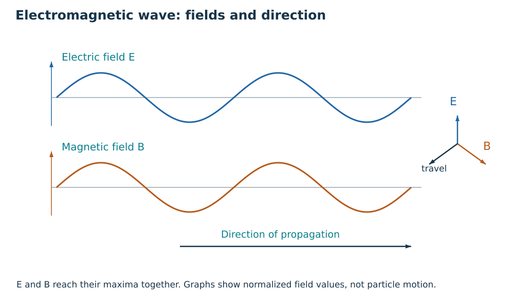
สรุป: คลื่นแม่เหล็กไฟฟ้ามีสนามไฟฟ้าและสนามแม่เหล็กที่เปลี่ยนแปลง แผ่ออกจากแหล่งกำเนิดที่กำลังแผ่รังสีอย่างต่อเนื่อง สนามทั้งสองตั้งฉากกันและตั้งฉากกับทิศการเคลื่อนที่ จึงเป็น คลื่นตามขวาง และเดินทางผ่านสุญญากาศได้
เส้นโค้งแสดงค่าของสนาม ไม่ใช่เส้นทางอนุภาค แสงจากดาวเดินทางผ่านอวกาศมาถึงเราได้ ต่อไปเราจะดูว่าสเปกตรัมแม่เหล็กไฟฟ้ามีย่านใดบ้าง
2 สเปกตรัมแม่เหล็กไฟฟ้า
สเปกตรัมแม่เหล็กไฟฟ้าคือช่วงความถี่หรือความยาวคลื่นของคลื่นแม่เหล็กไฟฟ้าทั้งหมด ไม่จำเป็นต้องมีทุกย่านเดินทางมาพร้อมกัน
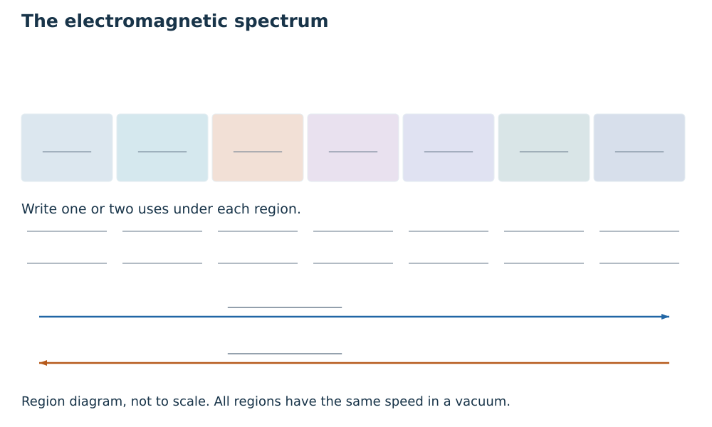
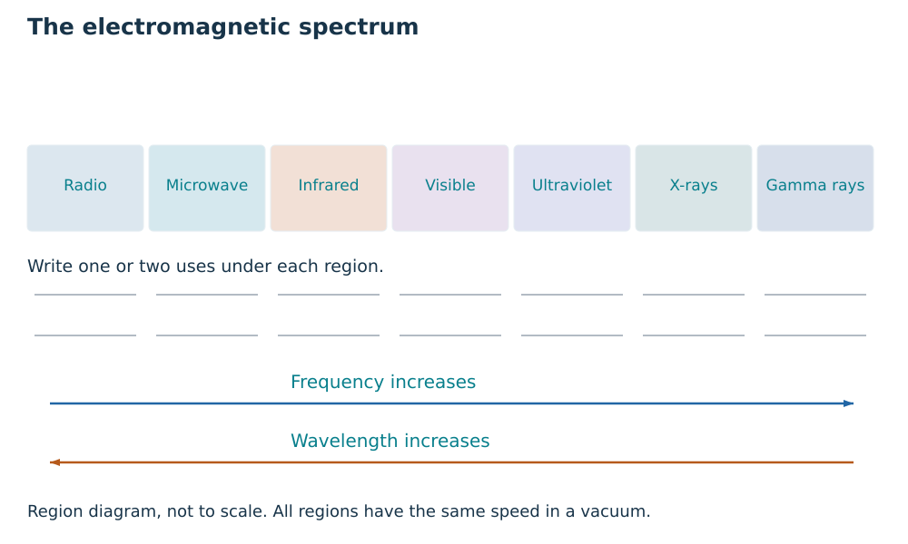
จดประโยชน์ย่านละ 1–2 ตัวอย่างสั้น ๆ
| ย่านคลื่น | ตัวอย่างการใช้ประโยชน์ |
|---|---|
| คลื่นวิทยุ | สื่อสารและกระจายเสียง |
| ไมโครเวฟ | เรดาร์ สื่อสารผ่านดาวเทียม และให้ความร้อนในเตาไมโครเวฟ |
| อินฟราเรด | รีโมตคอนโทรลและกล้องถ่ายภาพความร้อน |
| แสงที่มองเห็น | การมองเห็น การให้แสงสว่าง และการถ่ายภาพ |
| อัลตราไวโอเลต | กระตุ้นสารเรืองแสงและฆ่าเชื้อด้วยยูวีบางช่วงคลื่น |
| รังสีเอกซ์ | ถ่ายภาพภายในร่างกายและตรวจสอบวัสดุ |
| รังสีแกมมา | ฉายรังสีรักษาและทำให้อุปกรณ์บางชนิดปราศจากเชื้อ |
จากวิทยุถึงแกมมา ความถี่และความยาวคลื่นเปลี่ยนอย่างไร?
3 ซูมเข้ามาที่แสงที่ตามองเห็น
ในหัวข้อนี้ “แสง” หมายถึงคลื่นแม่เหล็กไฟฟ้าที่ตามนุษย์มองเห็นได้ หนังสือใช้ช่วงประมาณ 400–700 nm แสงสีต่าง ๆ ต่อเนื่องกัน ขอบเขตแบ่งสีต่อไปนี้เป็นค่าประมาณเพื่อทบทวน
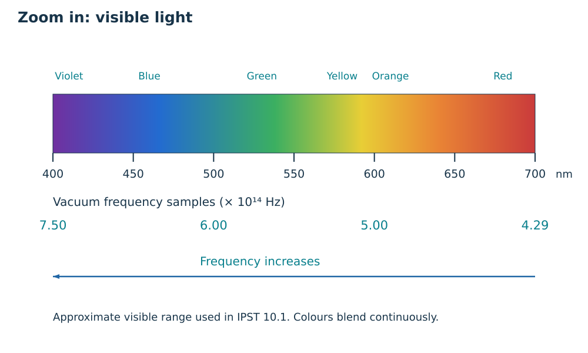
เติมช่วงความยาวคลื่นจากข้อมูลที่ครูให้ แล้วใช้ c = fλ คำนวณช่วงความถี่ ขอบเขตสีเป็นเพียงค่าประมาณ
| สี | ความยาวคลื่นโดยประมาณ / nm | ความถี่โดยประมาณ / \(10^{14}\ \mathrm{Hz}\) |
|---|---|---|
| ม่วง | \(400\text{–}450\) | \(6.67\text{–}7.50\) |
| น้ำเงิน | \(450\text{–}495\) | \(6.06\text{–}6.67\) |
| เขียว | \(495\text{–}570\) | \(5.26\text{–}6.06\) |
| เหลือง | \(570\text{–}590\) | \(5.08\text{–}5.26\) |
| แสด / ส้ม | \(590\text{–}620\) | \(4.84\text{–}5.08\) |
| แดง | \(620\text{–}700\) | \(4.29\text{–}4.84\) |
เปรียบเทียบความยาวคลื่น ความถี่ และอัตราเร็วในสุญญากาศของแสงสีแดงกับสีม่วง
4 อัตราเร็วแสง ตัวกลาง ดัชนีหักเห และหน่วย
| ปริมาณ / ความสัมพันธ์ | สูตรที่ควรจำ |
|---|---|
| อัตราเร็วแสงในสุญญากาศ | \(c\approx3.0\times10^8\ \mathrm{m\,s^{-1}}\) |
| ความสัมพันธ์ของคลื่น | \(v=f\lambda\) และในสุญญากาศ \(c=f\lambda\) |
| ระยะทางและเวลาเดินทาง | \(s=ct\) หรือ \(t=s/c\) |
สัญลักษณ์: \(c\) และ \(v\) อัตราเร็ว (m/s); \(f\) ความถี่ (Hz); \(\lambda\) ความยาวคลื่น (m); \(s\) ระยะทาง (m); \(t\) เวลา (s)
อัตราเร็วแสงขึ้นกับตัวกลาง
แสงในสุญญากาศ ในน้ำ และในแก้วมีอัตราเร็วเหมือนกันหรือไม่? จดความหมายของดัชนีหักเหและความสัมพันธ์กับอัตราเร็วแสง
ค่าต่อไปนี้เป็นค่าประมาณสำหรับแสงที่มองเห็น ใช้ \(c=3.0\times10^8\ \mathrm{m/s}\); ค่าของแก้วขึ้นกับชนิด และ \(n\) อาจต่างกันตามความถี่ของแสง
| ตัวกลาง | ดัชนีหักเหโดยประมาณ | อัตราเร็วแสง / m/s |
|---|---|---|
| สุญญากาศ | \(1.00\) | \(3.0\times10^8\) |
| อากาศ | \(1.00\) | \(3.0\times10^8\) |
| น้ำ | \(1.33\) | \(2.26\times10^8\) |
| แก้วตัวอย่าง | \(1.50\) | \(2.0\times10^8\) |
เมื่อแสงเปลี่ยนตัวกลาง ปริมาณใดคงเดิม และปริมาณใดเปลี่ยน?
| แปลงหน่วย | จดให้ครบ |
|---|---|
| นาโนเมตรเป็นเมตร | \(1\ \mathrm{nm}=10^{-9}\ \mathrm m\) |
| นาทีเป็นวินาที | \(1\ \mathrm{min}=60\ \mathrm s\) |
| ปีเป็นวินาทีในโจทย์นี้ | \(365\times24\times60\times60=3.1536\times10^7\ \mathrm s\) |
ในใบนี้ใช้ 1 ปี ≈ 365 วันเพื่อคำนวณโดยประมาณ ปีแสงเป็นระยะทางที่แสงเดินทางในสุญญากาศในหนึ่งปี ไม่ใช่หน่วยเวลา
5 แสดงวิธีทำ: จากสีของแสงถึงดวงดาว
ตัวอย่าง 1 · หาความถี่
แสงมีความยาวคลื่นในสุญญากาศ \(600\ \mathrm{nm}\) จงหาความถี่ โดยใช้ \(c=3.0\times10^8\ \mathrm{m/s}\)
แปลงหน่วย \(\lambda=600\times10^{-9}=6.00\times10^{-7}\ \mathrm m\)
จาก \(c=f\lambda\) ได้ \(f=\dfrac c\lambda=\dfrac{3.0\times10^8}{6.00\times10^{-7}}=5.0\times10^{14}\ \mathrm{Hz}\)
ตัวอย่าง 2 · อัตราเร็วแสงในแก้ว
แก้วชนิดหนึ่งมีดัชนีหักเห \(n=1.50\) สำหรับแสงที่พิจารณา จงหาอัตราเร็วแสงในแก้ว กำหนด \(c=3.0\times10^8\ \mathrm{m/s}\)
\(v=\dfrac{c}{n}=\dfrac{3.0\times10^8}{1.50}=2.0\times10^8\ \mathrm{m/s}\)
อัตราเร็วในแก้วน้อยกว่าอัตราเร็วในสุญญากาศ
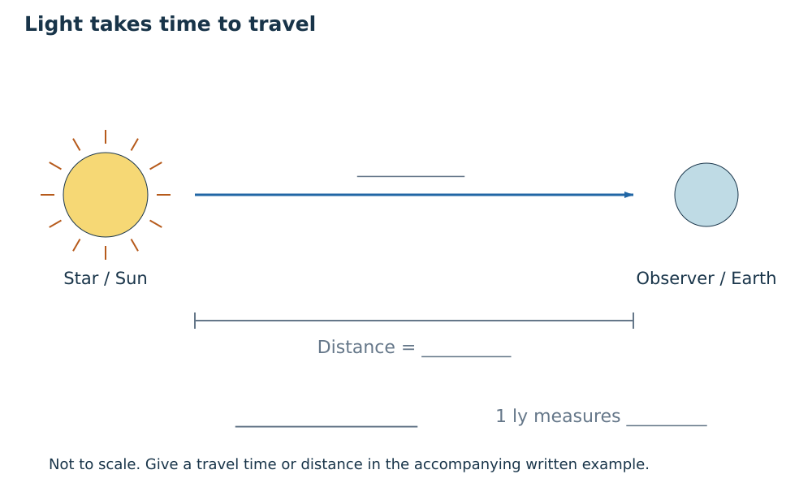
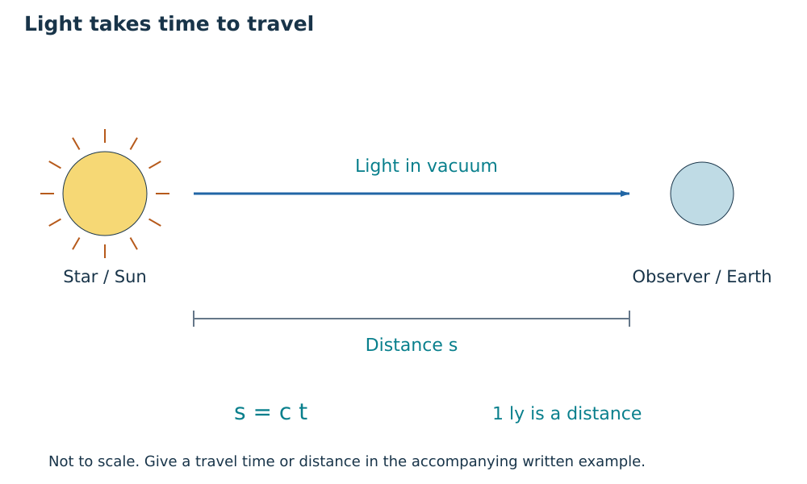
ตัวอย่าง 3 · แสงจากดวงอาทิตย์
ให้ระยะดวงอาทิตย์–โลกประมาณ \(1.5\times10^{11}\ \mathrm m\) แสงใช้เวลาเดินทางกี่วินาที และประมาณกี่นาที?
\(t=\dfrac sc=\dfrac{1.5\times10^{11}}{3.0\times10^8}=500\ \mathrm s\)
\(500/60\approx8.3\ \mathrm{min}\) หรือประมาณ 8 นาที 20 วินาที เราจึงรับแสงที่ออกจากดวงอาทิตย์เมื่อประมาณ 8.3 นาทีก่อน
ตัวอย่าง 4 · สร้างความหมายของหนึ่งปีแสง
ใช้ 1 ปี ≈ 365 วัน และ \(c=3.0\times10^8\ \mathrm{m/s}\) จงหาว่า 1 ปีแสงเท่ากับกี่เมตร และกี่กิโลเมตร
\(t=365\times24\times3600=3.1536\times10^7\ \mathrm s\)
\(s=ct=(3.0\times10^8)(3.1536\times10^7)=9.4608\times10^{15}\ \mathrm m\)
ดังนั้น \(1\ \mathrm{ly}\approx9.46\times10^{15}\ \mathrm m=9.46\times10^{12}\ \mathrm{km}\) เป็นหน่วยระยะทาง
ตัวอย่าง 5 · มองดาวคือมองอดีต
ในแบบจำลองที่ระยะทางคงที่ ดาวดวงหนึ่งอยู่ห่าง 10 ปีแสง แสงที่เราเห็นวันนี้ออกจากดาวเมื่อใด และดาวอยู่ห่างประมาณกี่เมตร?
แสงใช้เวลาเดินทางประมาณ 10 ปี จึงออกจากดาวเมื่อประมาณ 10 ปีก่อน
ระยะทาง \(s\approx10(9.46\times10^{15})=9.46\times10^{16}\ \mathrm m\)
เราเห็นสภาพของดาวเมื่อครั้งที่แสงออกเดินทาง ไม่ใช่ข้อมูลที่มาถึงทันที
6 ทวนพฤติกรรมคลื่น: สะท้อนและหักเห
6.1 การสะท้อน
เติมเส้นปกติ ชื่อรังสี มุม และความสัมพันธ์ของมุม มุมทุกมุมในกฎนี้วัดจากเส้นปกติ
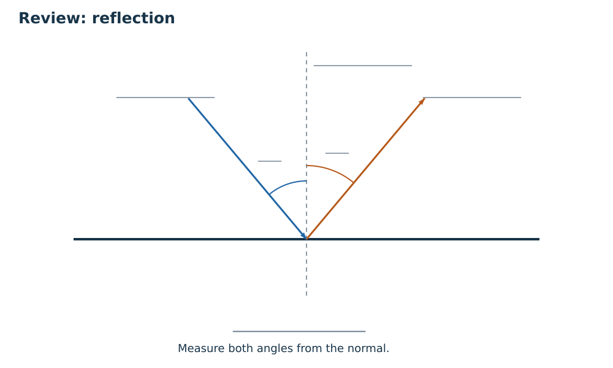
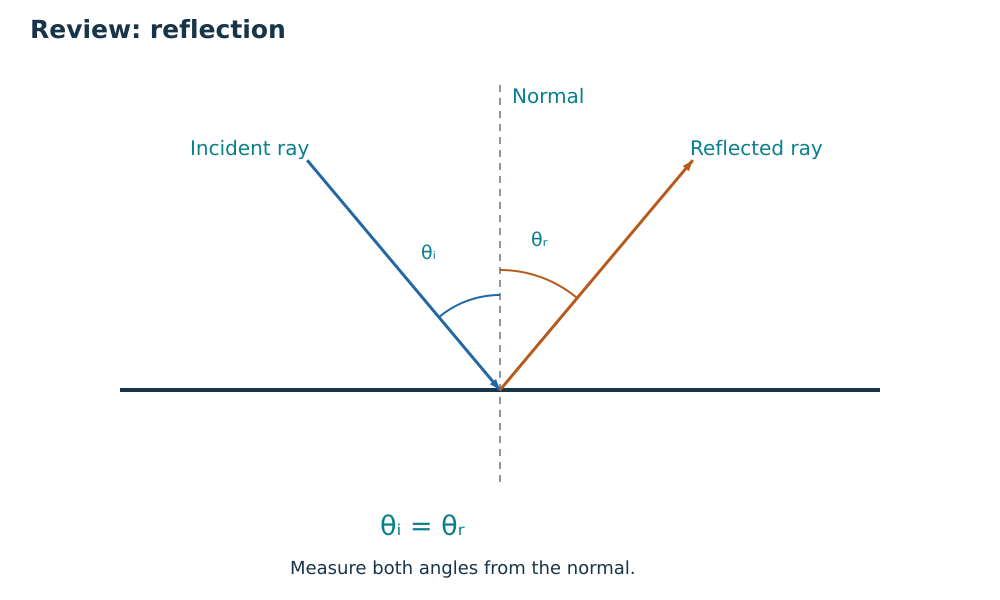
6.2 การหักเห
เติมมุมและกฎของสเนลล์ แล้วอธิบายสิ่งที่เปลี่ยนและสิ่งที่คงเดิมเมื่อคลื่นผ่านรอยต่อของตัวกลางที่อยู่นิ่ง
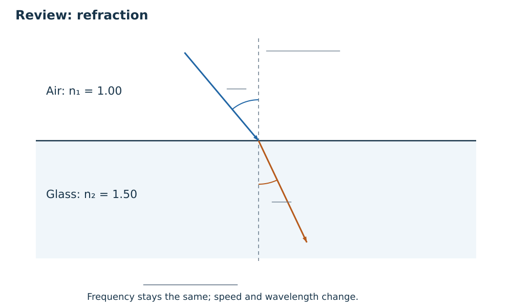
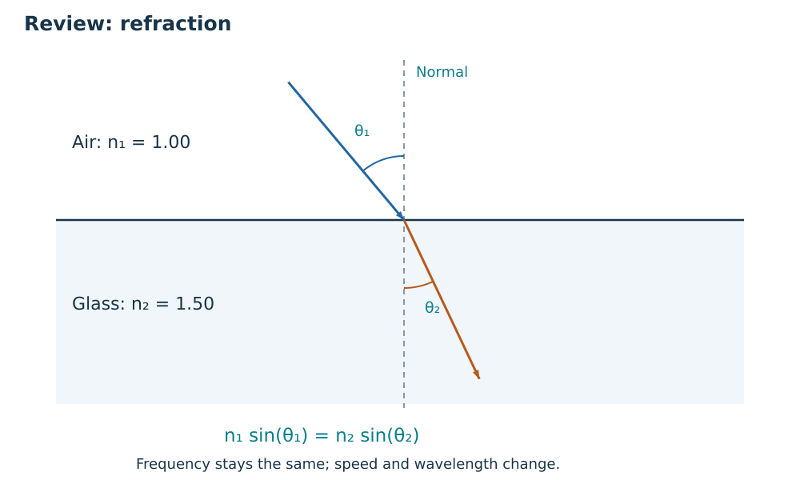
เมื่อแสงหักเห ปริมาณใดคงเดิม และปริมาณใดเปลี่ยน?
7 ทวนการซ้อนทับและการแทรกสอด
จดหลักการซ้อนทับ แล้วเขียนความสัมพันธ์ของการกระจัด
ใช้คลื่นแอมพลิจูดเท่ากัน \(A\) วาดรูปผลรวมและระบุการเสริมหรือหักล้าง
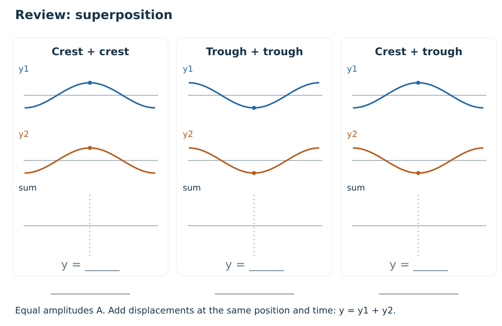
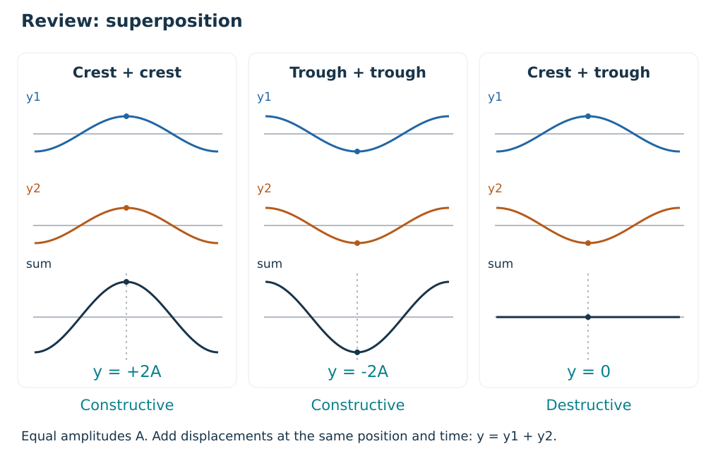
สันเจอสัน ท้องเจอท้อง และสันเจอท้อง ให้ผลต่างกันอย่างไร?
| คำสำคัญ | ความหมายที่ต้องแยกให้ชัด |
|---|---|
| Node / บัพ | ตำแหน่งที่แอมพลิจูดรวมเป็นศูนย์จากการหักล้างสมบูรณ์ ไม่ใช่เพียงผ่านตำแหน่งสมดุลชั่วขณะ |
| Antinode / ปฏิบัพ | ตำแหน่งที่แอมพลิจูดรวมมากที่สุดจากการเสริม สำหรับคลื่นย่อยแอมพลิจูดเท่ากันได้ \(2A\) |
หน้าคลื่นวงกลมด้านล่าง: เส้นบางทึบแทนสันคลื่น เส้นบางประแทนท้องคลื่น ให้ลากแนวบัพและปฏิบัพ ใช้แบบจำลองความถี่เท่ากันและแอมพลิจูดที่จุดพิจารณาเท่ากัน
แหล่งกำเนิดเฟสตรงกัน
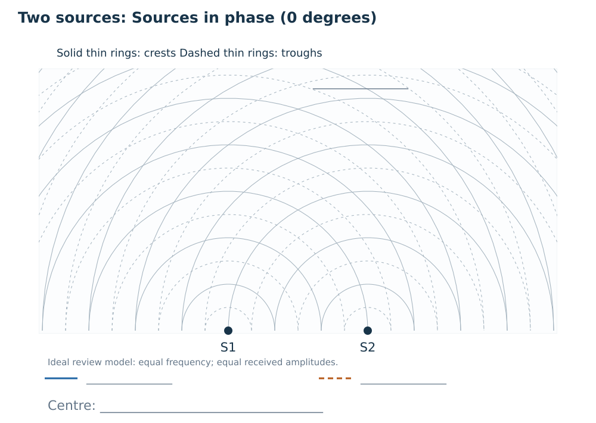
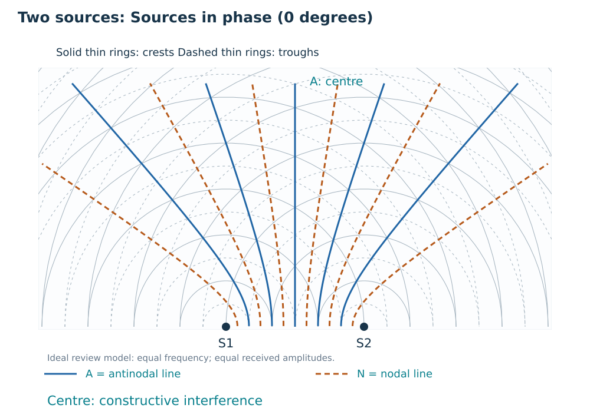
แหล่งกำเนิดเฟสตรงข้าม
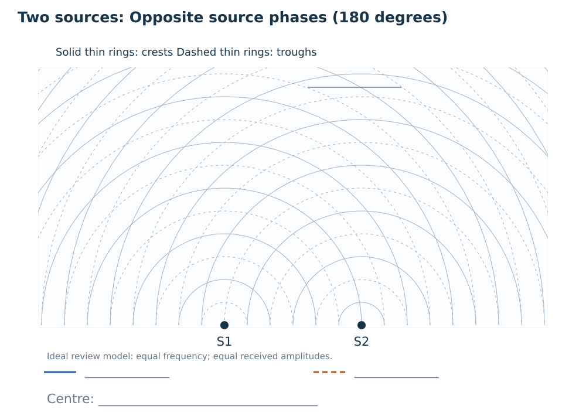
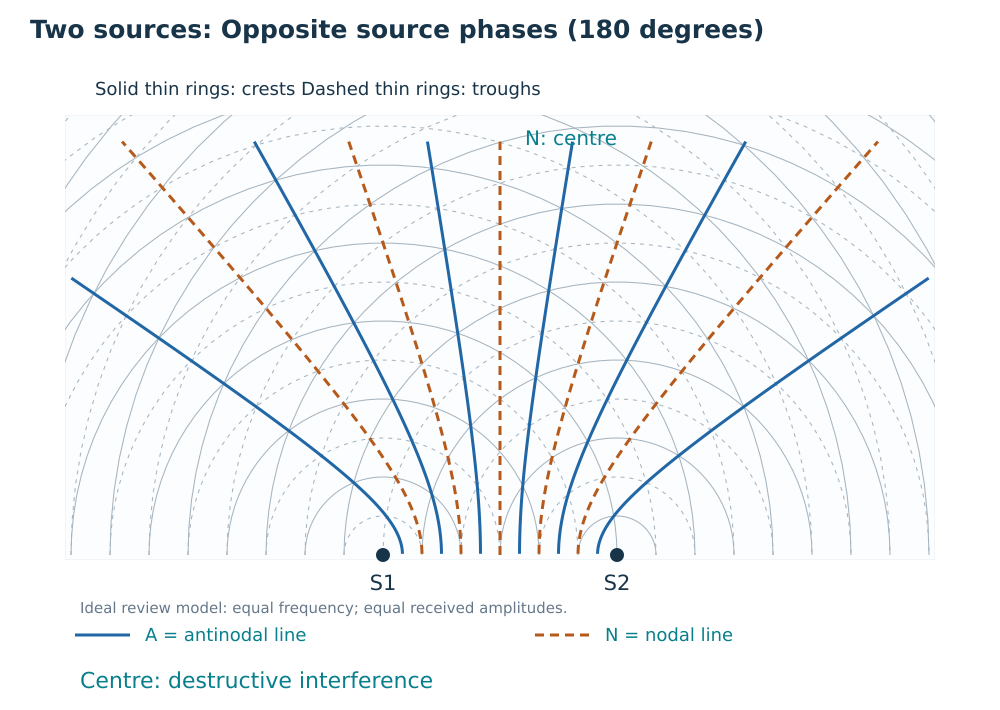
แนวกลางของทั้งสองกรณีเป็นบัพหรือปฏิบัพ? อธิบายโดยพิจารณาระยะทางจากแหล่งกำเนิด
ทวนเงื่อนไขผลต่างทางเดินจากบทคลื่นเดิม ให้ \(\Delta r=|r_2-r_1|\) และ \(m=0,1,2,\ldots\)
| เฟสของแหล่งกำเนิด | แนวปฏิบัพ / เสริม | แนวบัพ / หักล้าง |
|---|---|---|
| เฟสตรงกัน | \(\Delta r=m\lambda\) | \(\Delta r=(m+\tfrac12)\lambda\) |
| เฟสตรงข้าม 180° | \(\Delta r=(m+\tfrac12)\lambda\) | \(\Delta r=m\lambda\) |
วงกลมคือหน้าคลื่น ณ ขณะหนึ่ง ส่วนแนวบัพ–ปฏิบัพเป็นตำแหน่งตามเงื่อนไขผลต่างทางเดิน ไม่ควรวาดเป็นวงกลมอีกชุดหนึ่ง
8 ทวนการเลี้ยวเบน
การเลี้ยวเบนคือการแผ่ของคลื่นเมื่อผ่านช่องเปิดหรือขอบสิ่งกีดขวาง ใช้ภาพประกอบเพื่อจดข้อสังเกตและอธิบายการแผ่ ไม่ต้องคำนวณตำแหน่งแถบแสงในส่วนนี้
คำว่า “เลี้ยวเบนเด่นกว่า” ดูจากอะไร?
สำหรับภาพอ้างอิงแสงผ่านสลิตเดี่ยวบนฉากไกล วัดมุม \(\theta\) ที่กลางช่อง ระหว่างแนวตรงเดิมกับทิศไปยังแถบมืดแรก เส้นประเอียงจึงกำหนดขอบแถบสว่างกลาง ไม่ใช่ขอบสุดท้ายที่แสงไปถึง ยังมีแถบข้างอยู่ถัดออกไป
คงความยาวคลื่น เปลี่ยนความกว้างช่อง
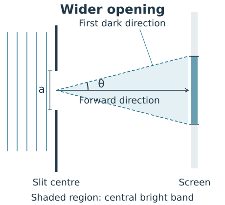
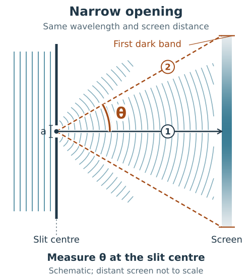
1 แนวตรงเดิม · 2 แนวไปยังแถบมืดแรก · \(\theta\) มุมระหว่างสองแนว วัดที่กลางช่อง
ความยาวคลื่นและระยะถึงฉากเท่ากัน เปรียบเทียบความกว้างช่อง มุม θ และแถบสว่างกลาง ภาพสเก็ตช์ ฉากไกลไม่ตามมาตราส่วน
เมื่อความยาวคลื่นเท่ากัน ช่องใดแผ่ออกด้านข้างเป็นมุมกว้างกว่า?
คงความกว้างช่อง เปลี่ยนความยาวคลื่น
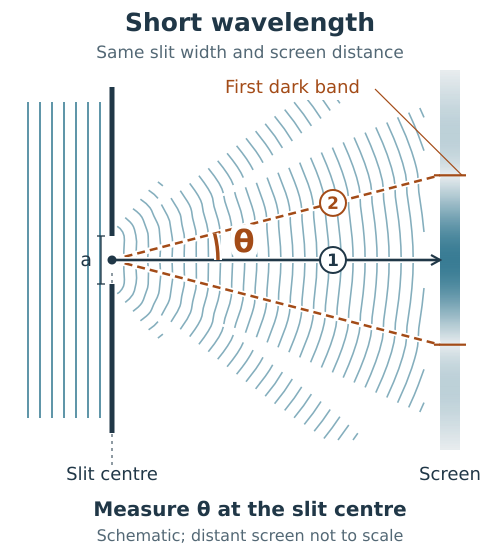
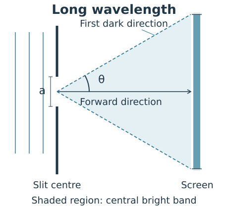
1 แนวตรงเดิม · 2 แนวจากกลางช่องไปยังแถบมืดแรก · \(\theta\) มุมระหว่างสองแนว วัดที่จุดกลางช่อง
ความกว้างช่องและระยะถึงฉากเท่ากัน เปรียบเทียบระยะห่างหน้าคลื่น มุม θ และแถบสว่างกลาง ภาพสเก็ตช์ ฉากไกลไม่ตามมาตราส่วน
เมื่อช่องเปิดเท่ากัน คลื่นชุดใดแผ่ออกด้านข้างเป็นมุมกว้างกว่า?
คลื่นผ่านขอบสิ่งกีดขวาง
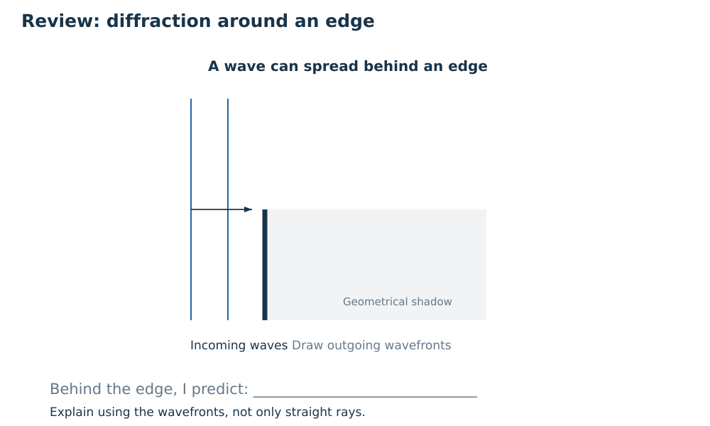
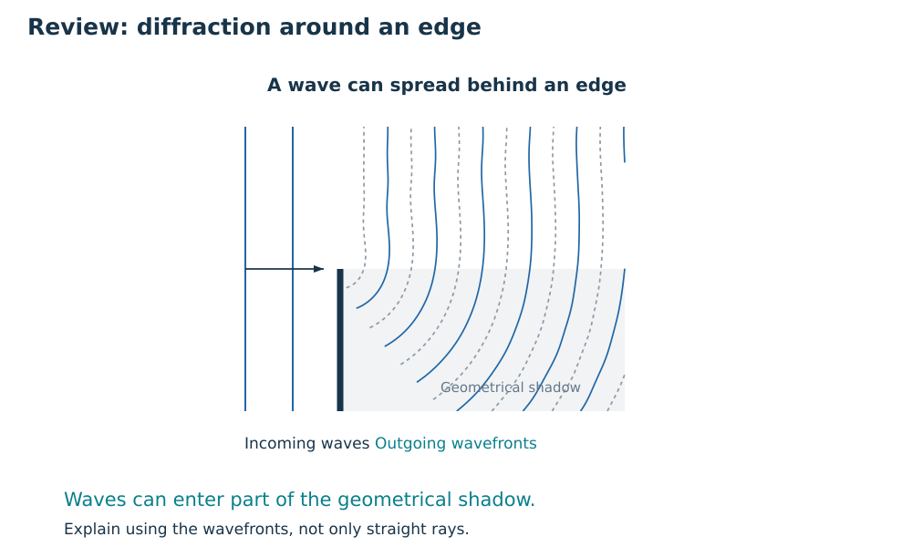
คลื่นเข้าไปถึงบริเวณด้านหลังสิ่งกีดขวางได้หรือไม่? อธิบายจากภาพ
เหตุใดการเลี้ยวเบนของแสงผ่านประตูจึงสังเกตได้ยากในชีวิตประจำวัน?
9 หลักฐานจากแสงจริง: มีพฤติกรรมแบบคลื่นหรือไม่?
ดูภาพทดลองจริง จดสิ่งที่เห็นก่อน แล้วจึงระบุพฤติกรรมที่สอดคล้องกับคลื่น ส่วนนี้ใช้ยืนยันว่ามีปรากฏการณ์ ยังไม่คำนวณแถบสว่าง–มืด
แทรกสอดหรือเลี้ยวเบน: ดูอุปกรณ์และรูปแบบบนฉากคู่กัน
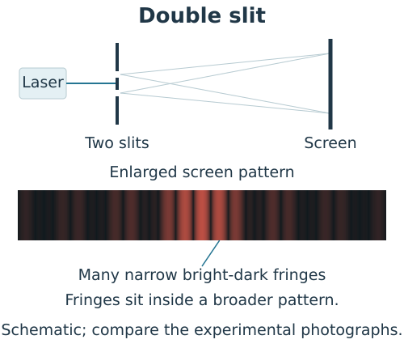
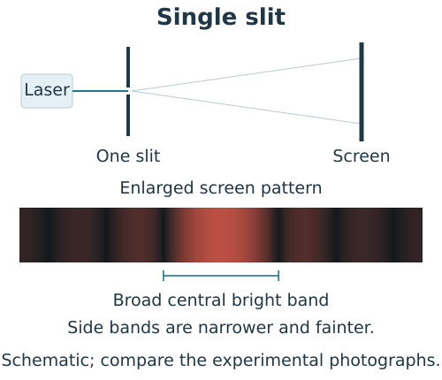
เปรียบเทียบอุปกรณ์และภาพบนฉาก แล้วจดจุดสังเกตและพฤติกรรมคลื่นลงในตาราง
| สิ่งที่ดู | การทดลองสลิตคู่ | การทดลองสลิตเดี่ยว |
|---|---|---|
| ช่องเปิด | สองช่องที่รับแสงเชื่อมโยงเฟสกัน | หนึ่งช่อง |
| จุดสังเกตบนฉาก | แถบสว่าง–มืดย่อยหลายแถบ ระยะห่างใกล้เคียงกัน แถบย่อยอยู่ภายในรูปแบบความสว่างที่กว้างกว่า | แถบสว่างกลางกว้างเด่น แถบข้างแคบกว่าและความสว่างลดลง |
| ปรากฏการณ์ | การแทรกสอดจากสองช่อง ร่วมกับการเลี้ยวเบนจากความกว้างของแต่ละช่อง | การเลี้ยวเบน โดยคลื่นย่อยจากส่วนต่าง ๆ ภายในช่องซ้อนทับกัน |
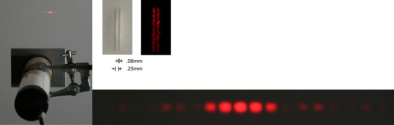
บันทึกสิ่งที่สังเกต → ระบุพฤติกรรมคลื่นที่สอดคล้อง
บันทึกสิ่งที่สังเกต → ระบุพฤติกรรมคลื่นที่สอดคล้อง
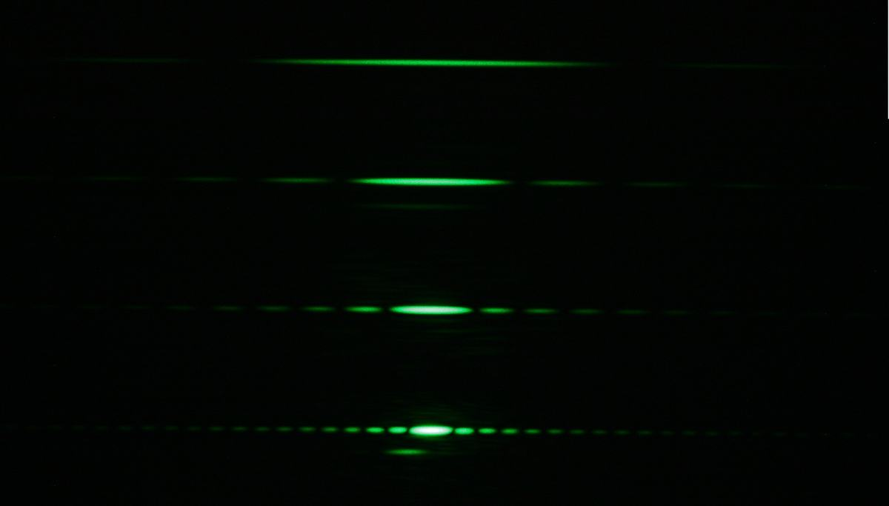
เปรียบเทียบรูปแบบทั้งสี่ แถบแสงเปลี่ยนอย่างไรเมื่อช่องแคบลง และแสดงพฤติกรรมใด?
ใช้ภาพทดลองช่วยเติมชื่อในแผนภาพ
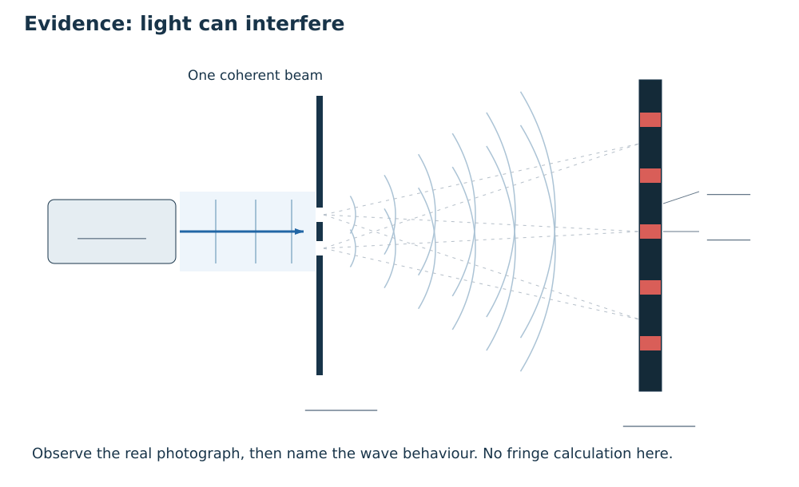
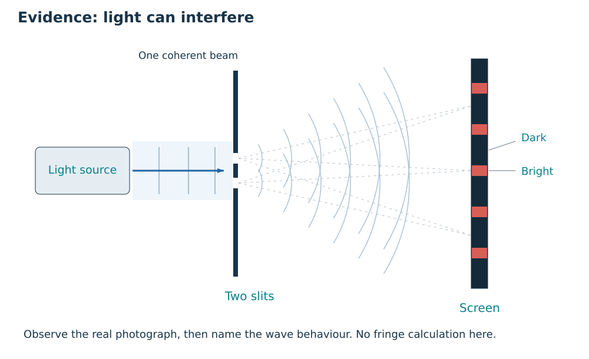
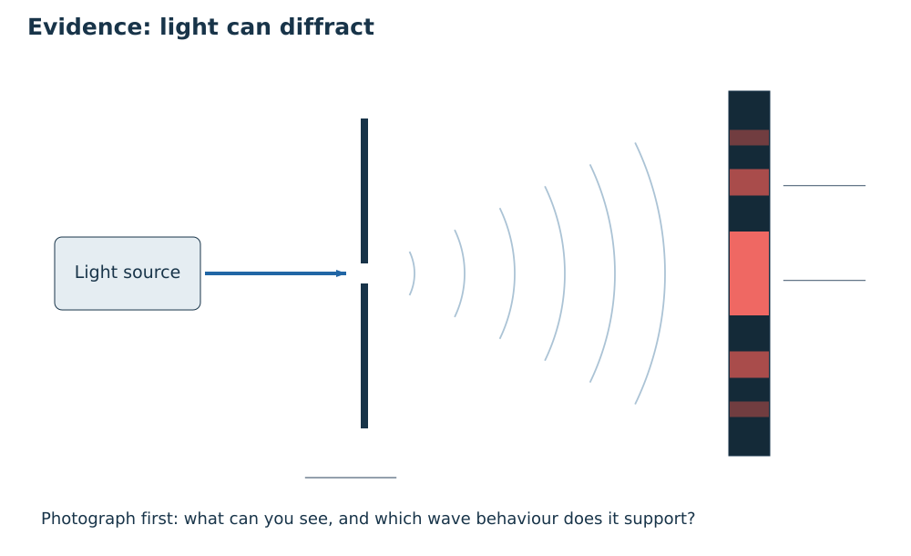
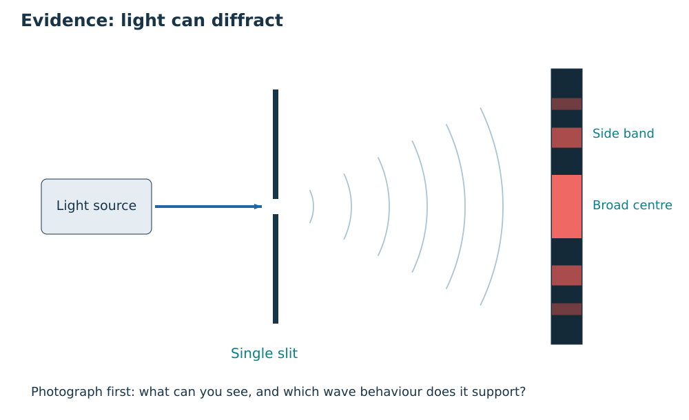
เหตุใดคำว่า “มีแถบสว่าง–มืด” เพียงอย่างเดียวจึงยังแยกสองการทดลองนี้ไม่ได้?
หลักฐานใดสนับสนุนว่าแสงมีพฤติกรรมเชิงคลื่น? การสะท้อนและหักเหเพียงพอหรือไม่?
10 แบบจำลอง หลักฐาน และสรุป 10.1
จดแนวคิดหลักหรือหลักฐานจากการทดลองของนักวิทยาศาสตร์แต่ละคน
| นักวิทยาศาสตร์ | แนวคิดหรือหลักฐาน |
|---|---|
| นิวตัน | เสนอแนวคิดว่าแสงเป็นอนุภาค |
| ฮอยเกนส์ | เสนอแนวคิดว่าแสงเป็นคลื่น |
| โทมัส ยัง | แสดงการแทรกสอดของแสงและใช้หาความยาวคลื่น เป็นหลักฐานสนับสนุนพฤติกรรมเชิงคลื่น |
หากผลการทดลองไม่ตรงกับแบบจำลอง นักวิทยาศาสตร์ควรทำอย่างไร?
หมายเหตุสั้น ๆ: ในฟิสิกส์ระดับสูง แสงยังแสดงพฤติกรรมแบบอนุภาคในบางปรากฏการณ์ การศึกษาคลื่นในบทนี้ไม่ได้แปลว่าแบบจำลองอนุภาคผิดทุกกรณี
สรุปด้วยคำของตนเอง: คลื่นแม่เหล็กไฟฟ้า → สเปกตรัม → แสงที่มองเห็น → ความเร็วแสง → หลักฐานเชิงคลื่น
คำถามตรวจสอบความเข้าใจ 10.1 — สสวท.
1. พฤติกรรมใดที่แสดงว่าแสงเป็นคลื่น
2. มนุษย์สามารถรับรู้คลื่นแสงได้อย่างไร
Physics · Chapter 10 Wave optics
10.1 Wave Model of Light
Explore the electromagnetic spectrum, revisit familiar wave ideas, and use observations to explain the behaviour of light
Fill in key ideas, record observations, draw diagrams and show working in the spaces. Use the shared controls to reveal answers and print a blank or answer edition.
1 Stars and electromagnetic waves
Stars such as the Sun are extremely hot and emit electromagnetic radiation, including visible light. Nuclear fusion inside the Sun supplies its energy.
Review: oscillating or accelerating electric charges can radiate electromagnetic waves, one of the radiation processes in stellar matter.
Summary: continuous radiation carries energy outward through varying electric and magnetic fields. The fields are perpendicular to each other and to the propagation direction, so electromagnetic waves are transverse. They can travel through a vacuum.
The curves represent field values, not particle paths. Starlight can travel through space to reach us. Next, we examine the regions of the electromagnetic spectrum.
2 The electromagnetic spectrum
The electromagnetic spectrum is the full range of electromagnetic frequencies or wavelengths. It does not require all regions to arrive together.
Record one or two brief applications for each region.
| Region | Applications |
|---|---|
| Radio | Communications and broadcasting |
| Microwave | Radar, satellite links and heating in microwave ovens |
| Infrared | Remote controls and thermal imaging |
| Visible | Vision, illumination and photography |
| Ultraviolet | Exciting fluorescent materials and disinfection using selected UV wavelengths |
| X-rays | Imaging internal body structures and inspecting materials |
| Gamma rays | Radiotherapy and sterilising selected equipment |
From radio to gamma rays, how do frequency and wavelength change?
3 Zoom in on visible light
Here, “light” means the electromagnetic radiation visible to the human eye. The textbook uses approximately 400–700 nm. Colours blend continuously; the boundaries below are approximate review values.
Fill in approximate wavelength bands using the supplied class data, then calculate frequency bands using c = fλ.
| Colour | Approximate wavelength / nm | Approximate frequency / \(10^{14}\ \mathrm{Hz}\) |
|---|---|---|
| Violet | \(400\text{–}450\) | \(6.67\text{–}7.50\) |
| Blue | \(450\text{–}495\) | \(6.06\text{–}6.67\) |
| Green | \(495\text{–}570\) | \(5.26\text{–}6.06\) |
| Yellow | \(570\text{–}590\) | \(5.08\text{–}5.26\) |
| Orange | \(590\text{–}620\) | \(4.84\text{–}5.08\) |
| Red | \(620\text{–}700\) | \(4.29\text{–}4.84\) |
Compare red and violet light: wavelength, frequency and speed in a vacuum.
4 Light speed, media, refractive index and units
| Quantity / relation | Recall |
|---|---|
| Vacuum light speed | \(c\approx3.0\times10^8\ \mathrm{m\,s^{-1}}\) |
| Wave relation | \(v=f\lambda\); in a vacuum \(c=f\lambda\) |
| Travel distance and time | \(s=ct\) or \(t=s/c\) |
Symbols: \(c\) and \(v\), speed (m/s); \(f\), frequency (Hz); \(\lambda\), wavelength (m); \(s\), distance (m); \(t\), time (s).
Light speed depends on the medium
Does light travel at the same speed in vacuum, water and glass? Record what refractive index means and how it relates to light speed.
Approximate visible-light values using \(c=3.0\times10^8\ \mathrm{m/s}\). Glass values depend on the glass type; \(n\) may also vary with light frequency.
| Medium | Approximate refractive index | Light speed / m/s |
|---|---|---|
| Vacuum | \(1.00\) | \(3.0\times10^8\) |
| Air | \(1.00\) | \(3.0\times10^8\) |
| Water | \(1.33\) | \(2.26\times10^8\) |
| Example glass | \(1.50\) | \(2.0\times10^8\) |
When light changes medium, what stays the same and what changes?
| Conversion | Complete the conversion |
|---|---|
| Nanometres to metres | \(1\ \mathrm{nm}=10^{-9}\ \mathrm m\) |
| Minutes to seconds | \(1\ \mathrm{min}=60\ \mathrm s\) |
| Year to seconds in these examples | \(365\times24\times60\times60=3.1536\times10^7\ \mathrm s\) |
Use approximately 365 days per year in these calculations. A light-year is the distance light travels in a vacuum in one year; it is not a unit of time.
5 Show your working: from colours to stars
Example 1 · Find a frequency
Light has a vacuum wavelength of \(600\ \mathrm{nm}\). Find its frequency using \(c=3.0\times10^8\ \mathrm{m/s}\).
Convert: \(\lambda=600\times10^{-9}=6.00\times10^{-7}\ \mathrm m\).
Using \(c=f\lambda\): \(f=\dfrac c\lambda=\dfrac{3.0\times10^8}{6.00\times10^{-7}}=5.0\times10^{14}\ \mathrm{Hz}\).
Example 2 · Light speed in glass
A glass has refractive index \(n=1.50\) for the light considered. Find the light speed in the glass using \(c=3.0\times10^8\ \mathrm{m/s}\).
\(v=\dfrac{c}{n}=\dfrac{3.0\times10^8}{1.50}=2.0\times10^8\ \mathrm{m/s}\)
Light travels more slowly in this glass than in a vacuum.
Example 3 · Sunlight travel time
Take the Sun–Earth distance as \(1.5\times10^{11}\ \mathrm m\). How many seconds, and approximately how many minutes, does sunlight take to reach Earth?
\(t=\dfrac sc=\dfrac{1.5\times10^{11}}{3.0\times10^8}=500\ \mathrm s\).
\(500/60\approx8.3\ \mathrm{min}\), about 8 min 20 s. The sunlight arriving now left the Sun about 8.3 minutes earlier.
Example 4 · Build the meaning of one light-year
Using approximately 365 days per year and \(c=3.0\times10^8\ \mathrm{m/s}\), calculate one light-year in metres and kilometres.
\(t=365\times24\times3600=3.1536\times10^7\ \mathrm s\).
\(s=ct=(3.0\times10^8)(3.1536\times10^7)=9.4608\times10^{15}\ \mathrm m\).
Thus \(1\ \mathrm{ly}\approx9.46\times10^{15}\ \mathrm m=9.46\times10^{12}\ \mathrm{km}\), a distance.
Example 5 · Seeing a star means seeing earlier light
In a constant-distance model, a star is 10 light-years away. When did the light arriving today leave the star, and approximately how far away is the star in metres?
The light takes about 10 years to travel here, so it left the star about 10 years ago.
Distance: \(s\approx10(9.46\times10^{15})=9.46\times10^{16}\ \mathrm m\).
We observe the star as it was when that light departed; information does not arrive instantly.
6 Wave review: reflection and refraction
6.1 Reflection
Label the normal, rays and angles, then recall the angle relation. Measure these angles from the normal.
6.2 Refraction
Label the angles and recall Snell’s law. Explain what changes and what stays the same when a wave crosses a stationary boundary.
When light refracts, which quantity stays constant and which quantities change?
7 Recall superposition and interference
Record the superposition principle and write its displacement relation.
For equal wave amplitudes \(A\), draw the result and identify reinforcement or cancellation.
How do crest + crest, trough + trough and crest + trough differ?
| Term | Meaning |
|---|---|
| Node / node | A position of zero resultant amplitude through complete cancellation, not just a momentary zero displacement. |
| Antinode / antinode | A position of maximum resultant amplitude through reinforcement; equal component amplitudes give \(2A\). |
In the circular-wavefront diagrams, thin solid rings mark crests and thin dashed rings mark troughs. Trace nodal and antinodal lines. Assume equal frequencies and equal received amplitudes at the point considered.
Sources in phase
Sources in opposite phase
Is the centre line nodal or antinodal in each case? Explain using the distances from the sources.
Recall the path-difference conditions from the earlier wave topic. Use \(\Delta r=|r_2-r_1|\) and \(m=0,1,2,\ldots\).
| Source phases | Antinodal / constructive | Nodal / destructive |
|---|---|---|
| In phase | \(\Delta r=m\lambda\) | \(\Delta r=(m+\tfrac12)\lambda\) |
| 180° out of phase | \(\Delta r=(m+\tfrac12)\lambda\) | \(\Delta r=m\lambda\) |
The circles are wavefronts at one instant. Nodal and antinodal loci follow path-difference conditions; they are not another family of circles.
8 Recall diffraction
Diffraction is the spreading of waves through an opening or around an edge. Use the supplied diagrams to record observations and explain the spreading; fringe positions are not calculated here.
What does “more noticeable diffraction” mean?
For the far-field single-slit reference diagrams, measure \(\theta\) at the slit centre, from the forward axis to the first dark direction. The sloping dashed lines bound the central bright band; they are not the last directions reached by light. Side bands also occur beyond them.
Keep wavelength fixed; change opening width
1 Forward axis · 2 First-dark direction · \(\theta\) Angle between these directions, measured at the slit centre
Same wavelength and screen distance. Compare the slit widths, theta angles and central bands. Schematic; the distant screen is not to scale.
At the same wavelength, which opening produces a wider spreading angle?
Keep the opening fixed; change wavelength
1 Forward axis · 2 Direction from the slit centre to the first dark band · \(\theta\) Angle between these directions, measured at the slit centre
Same slit width and screen distance. Compare the wavefront spacing, theta angles and central bands. Schematic; the distant screen is not to scale.
At the same opening width, which wavelength produces a wider spreading angle?
A wave passing an edge
Can the wave reach behind the obstacle? Explain using the diagram.
Why is light diffraction through a doorway hard to notice in everyday life?
9 Evidence from light: does it behave like a wave?
Observe the real experimental photographs first, then identify the corresponding wave behaviour. This section establishes the presence of the phenomena; it does not calculate fringe positions.
Interference or diffraction: inspect apparatus and screen together
Compare the supplied apparatus and screen images, then complete the observations and wave behaviour.
| What to inspect | Double-slit experiment | Single-slit experiment |
|---|---|---|
| Openings | Two coherently illuminated slits | One slit |
| Screen features | Many narrow bright–dark fringes, with approximately equal spacing, within a broader brightness pattern | A prominent broad central bright band; narrower and progressively fainter side bands |
| Phenomena | Two-slit interference together with diffraction from each slit’s finite width | Diffraction, involving superposition of contributions from different parts of the opening |
Record what you observe → identify the corresponding wave behaviour.
Record what you observe → identify the corresponding wave behaviour.
Compare the four patterns. How does the pattern change as the slit narrows, and which wave behaviour is shown?
Use the photographs to label the outline diagrams
Why are “bright and dark bands” alone insufficient to distinguish these two experiments?
Which evidence supports wave-like behaviour of light? Are reflection and refraction alone decisive?
10 Models, evidence and the 10.1 summary
Record each scientist’s main idea or experimental evidence.
| Scientist | Idea or evidence |
|---|---|
| Newton | Supported a particle model of light. |
| Huygens | Proposed a wave model of light. |
| Thomas Young | Demonstrated light interference and used it to determine wavelengths, providing evidence for wave-like behaviour. |
What should scientists do when experimental evidence disagrees with a model?
Brief note: in later physics, light also shows particle-like behaviour in some phenomena. Studying its wave behaviour here does not make the particle description wrong in every context.
Summarise in your own words: electromagnetic waves → spectrum → visible light → light speed → wave evidence.
IPST understanding check 10.1
1. Which behaviours show that light behaves as a wave?
2. How can humans perceive light waves?